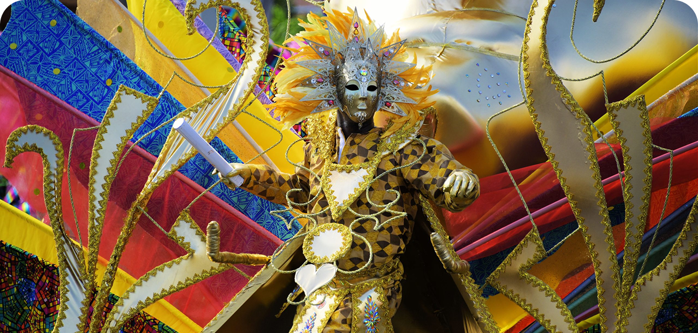
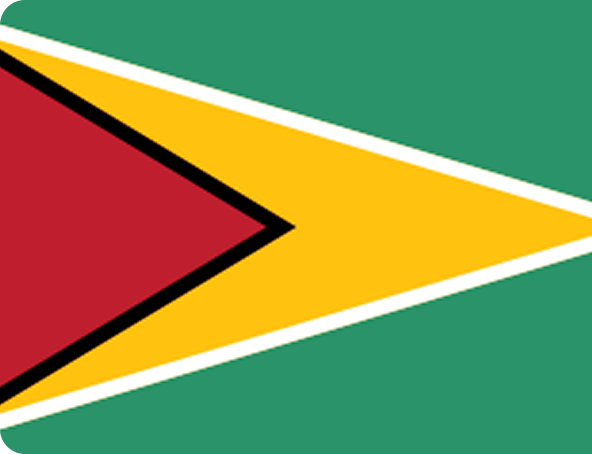
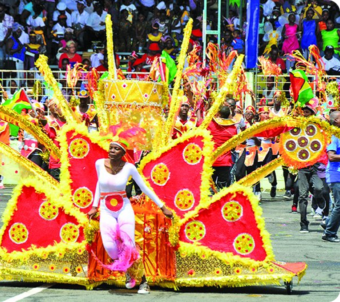

GUIANA
Mansharamani
Mansharamani

A celebração é marcada por participantes que desfilam com fantasias coloridas e elaboradas, representando a diversidade cultural da Guiana. Inspirados em elementos da natureza, da história nacional e das heranças africanas, indígenas, indianas e europeias, esses personagens transformam as ruas em um grande espetáculo de identidade e criatividade. Durante o festival, as fantasias funcionam como uma forma de expressão cultural e orgulho nacional, celebrando a independência, a liberdade e a união do povo guianense por meio da arte, da música e da dança.
O festival Mashramani (muitas vezes chamado apenas de “Mash”) é a principal celebração republicana da Guyana e se destaca por seus desfiles de fantasias exuberantes, influenciados por diversas tradições culturais do país. As vestimentas usadas durante o evento refletem a diversidade étnica guianense e combinam elementos africanos, indígenas, indianos e caribenhos.
Os participantes desfilam em “costume bands” (grupos fantasiados) usando roupas elaboradas com penas, lantejoulas, miçangas, tecidos brilhantes e estruturas ornamentais. As cores costumam ser intensas e vibrantes, frequentemente inspiradas na natureza da Guiana, em símbolos nacionais e em temas culturais específicos.
Muitos figurinos utilizam as cores da bandeira guianense e referências à biodiversidade local, como araras, lírios amazônicos, helicônias e paisagens florestais. Algumas fantasias representam temas nacionais, recursos naturais e aspectos históricos do país.
A origem da palavra “Mashramani” vem de uma língua indígena e significa algo próximo de “celebração após o trabalho coletivo”. Diversos trajes incorporam elementos inspirados nas culturas ameríndias, como adornos de penas, miçangas artesanais, pinturas corporais e motivos ligados à natureza.

O Mashramani é um festival celebrado anualmente no dia 23 de fevereiro, comemorando a transformação da Guiana em uma república. O nome vem de uma língua ameríndia e significa “celebração de um trabalho bem feito”. Na festa acontece um grande desfile com carros alegóricos, fantasias coloridas, danças e músicas de origem caribenha, além de diversas competições musicais, como steel band, soca, chutney e calypso. Além das apresentações, o festival também inclui a coroação de um rei e uma rainha. Essa celebração reúne diferentes grupos étnicos do país, destacando-se como um dos eventos mais vibrantes e inclusivos da Guiana.

A Guiana é o único país sul-americano cuja língua oficial é o inglês. Sua população é formada por diferentes matrizes culturais, incluindo povos indígenas, africanos, indianos e europeus. Após séculos de colonização britânica, tornou-se uma república independente em 1970./p>
O Mashramani celebra justamente essa conquista. Com desfiles, fantasias e manifestações artísticas, a festa representa a diversidade cultural do país e reafirma a construção de uma identidade nacional própria. As vestimentas coloridas transformam histórias de migração, resistência e convivência multicultural em expressão visual.
